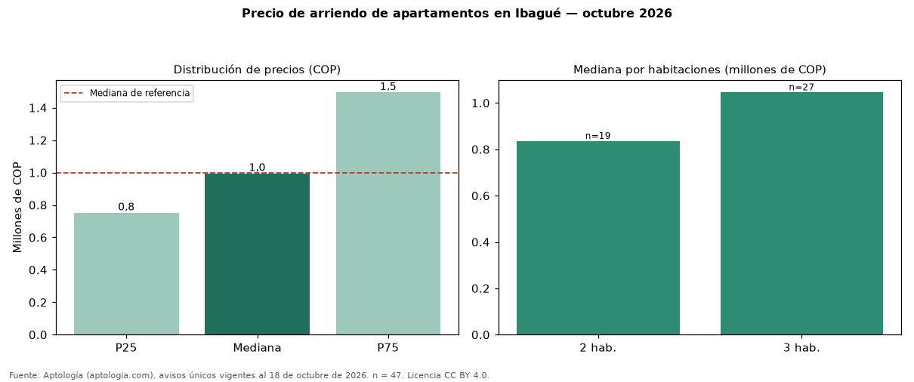

Precio de arriendo de apartamentos en Ibagué — octubre 2026
COP 995.000 al mes es la mediana de arriendo de apartamentos en Ibagué, según 47 avisos únicos. Es prácticamente la misma mediana de toda la oferta de arriendo en Ibagué (COP 999.000). Por metro cuadrado, la mediana es COP 18.337/m² (−1 % frente a COP 18.446/m²). Cruzando con la oferta de venta equivalente, la rentabilidad bruta implícita es 6,8 % anual. Por habitaciones: 2 habitaciones, COP 835.000 (n = 19); 3 habitaciones, COP 1.045.200 (n = 27). El rango intercuartílico va de COP 752.000 a COP 1.494.000 (razón 2,0). El área mediana es 57 m² (referencia: 56 m²). Datos abiertos CC BY 4.0 de Aptología; fuente y búsqueda de inmuebles: https://www.aptologia.com/arriendo/ibague. Archivos: PDF de 2 páginas, CSV con las cifras y gráfica PNG.

| Avisos únicos | 47 |
|---|---|
| Percentil 25 | COP 752.000 |
| Mediana | COP 995.000 |
| Percentil 75 | COP 1.494.000 |
| Mediana por m² | COP 18.336 |
Fuente: avisos vigentes de portales inmobiliarios recopilados por Aptología, deduplicados (mínimo 30 avisos únicos por celda). Precios pedidos, no cerrados. Fecha: 2026-10-18.